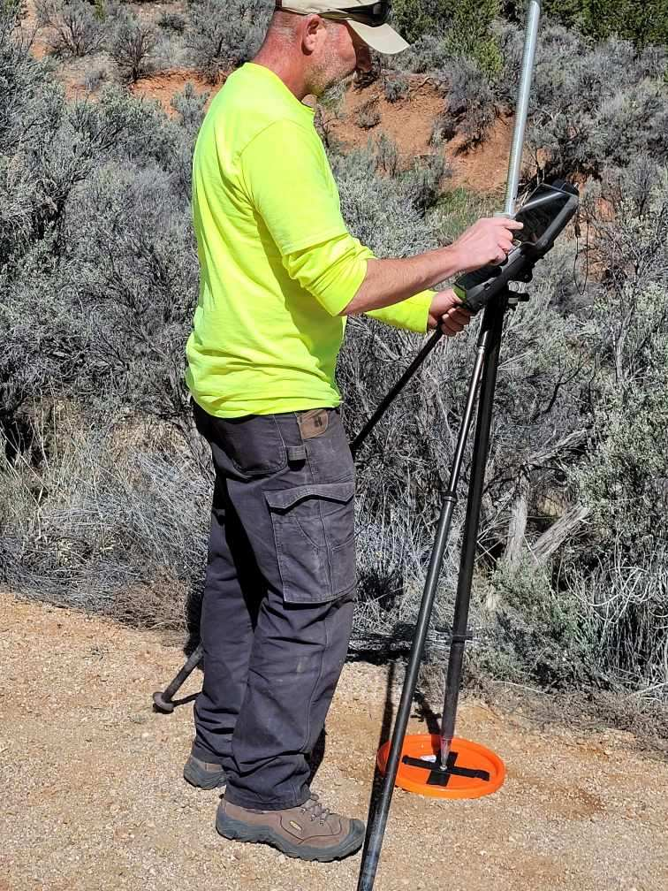
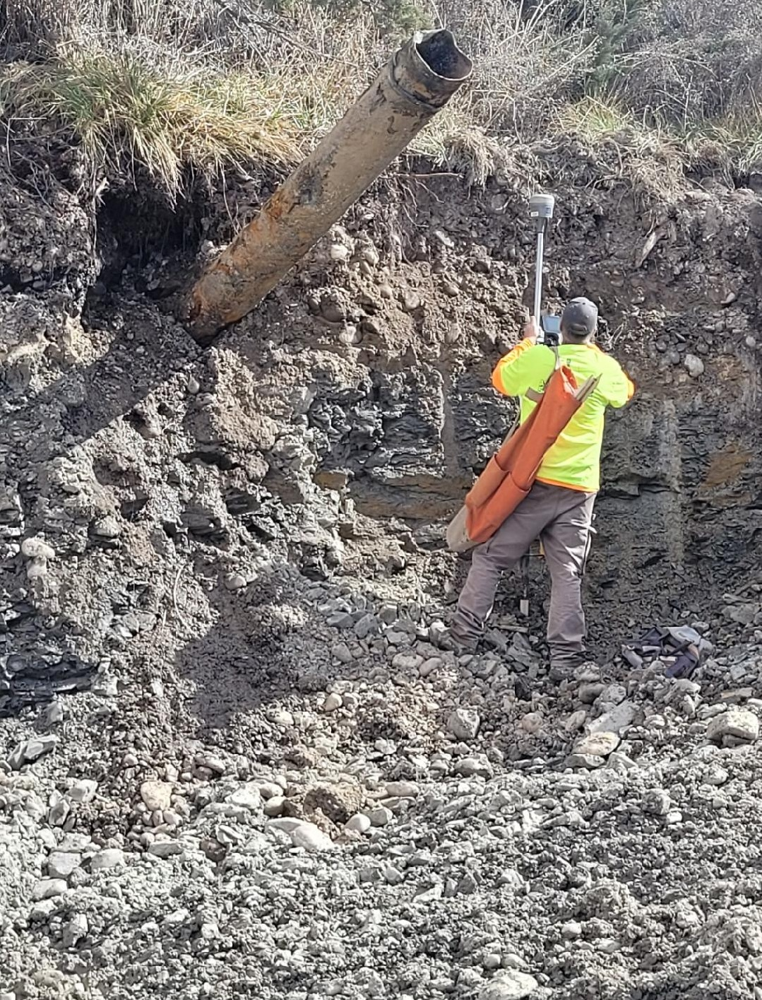
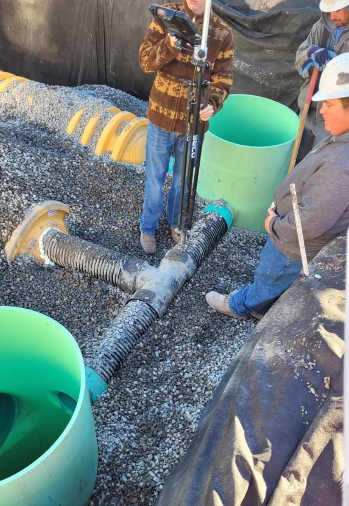
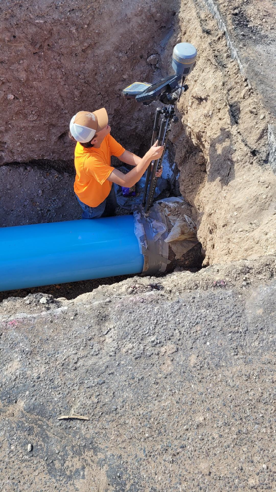

Types of Surveys

Boundary Survey
A type of survey that confirms true property lines, corners, and monuments of a parcel of land. Uses field and record research.



Construction Survey
Surveys that guide the precise placement of structures, roads, sidewalks, and utilities.
As-built Survey
Measures and verifies the final position of newly installed improvements relative to the original plans.
Subdivision Survey
A survey that divides a larger plot of land into smaller sections or lots.

ALTA/Land Title Survey
Comprehensive real estate survey that provides data on boundaries, easements, improvements, and encumbrances.